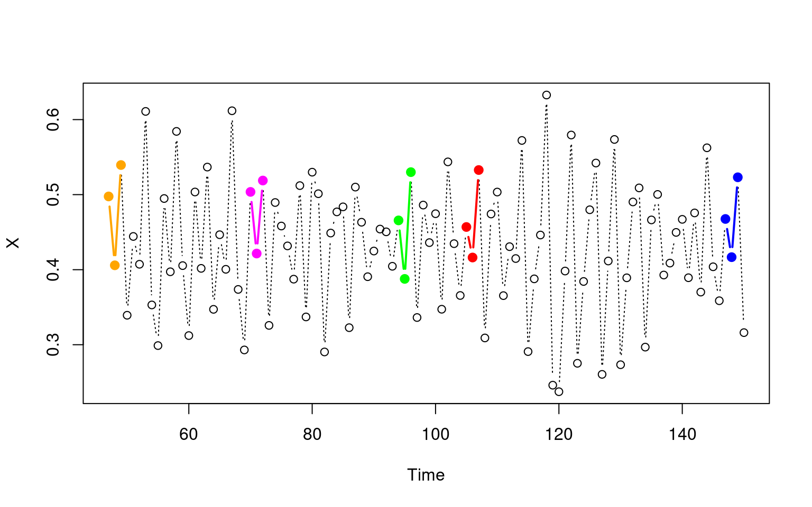
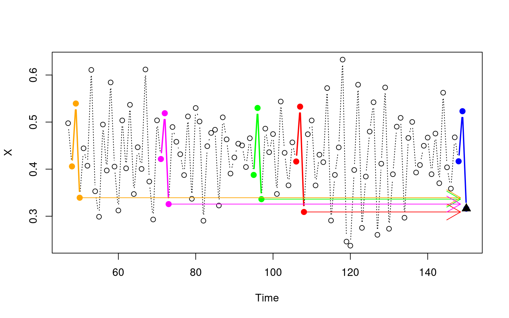

EDM Algorithms
Simplex : Nearest Neighbor Projection
The Simplex algorithm is a nearest neighbor projection. It collects the knn
nearest points to the query point in phase space, then calculates the prediction
as the normalized weighted trajectory of each neighbor, each neighbor contributing
to the prediction proportional to their distance to the query point.
It is a simple prediction algorithm typically used to quickly estimate how much
information the attractor has for predicting a variable.
The images below illustrate the algorithm:


Note: the plots for the Simplex reconstruction were taken from the mathbio tutorial on the EDM algorithms.
S-Map : Sequential Locally Weighted Global Linear Maps
See the link to the exported jupyter notebook below on the S-Map algorithm:
Jupyter notebook: S-MAP Notebook
tldr: For every query point, S-MAP constructs a linear function from all state-space neighbors. However, each neighbor is weighted with an exponential function based on theta, such that nearby points to the query point have a higher weight than those further from it, such that a locally linear approximation to the nonlinear system of study is appropriate (as long as theta is weighted proportionately to how nonlinear the system is). Hopefully it makes sense now why SMAP stands for sequentially weighted global linear maps, since the algorithm: for every query point (sequentially) weights the entire library (weighted global) and then computes a linear solution mapping the local space on the reconstructed attractor to the space of the target variable (linear maps).
CCM : Convergent Cross Mapping
Suppose that in some dynamical system involving variables X and Y, X causes Y
(if you were trying to define Y as an explicit function, X would be a term in this
equation).
Takens' Theorem suggests that because X and Y belong to the same dynamical system, their
reconstructions (via embeddings) Mx and My map to the same system, and so Mx and My
should map to each other as well. CCM leverages this property to detect causality
by predicting X using My's library of points (or vice versa for other direction of
causality).
The intuition is that if X causes Y, then there should be some artifact of X
embedded in Y that we can extract by performing state space reconstruction on Y,
and approximate how much X drives Y by how well Simplex can predict X from My's
attractor. The prediction is performed via Simplex, using My's library to search
for the nearest neighbors to a query point in X, and measuring the correlation
between X predicted from My and X.